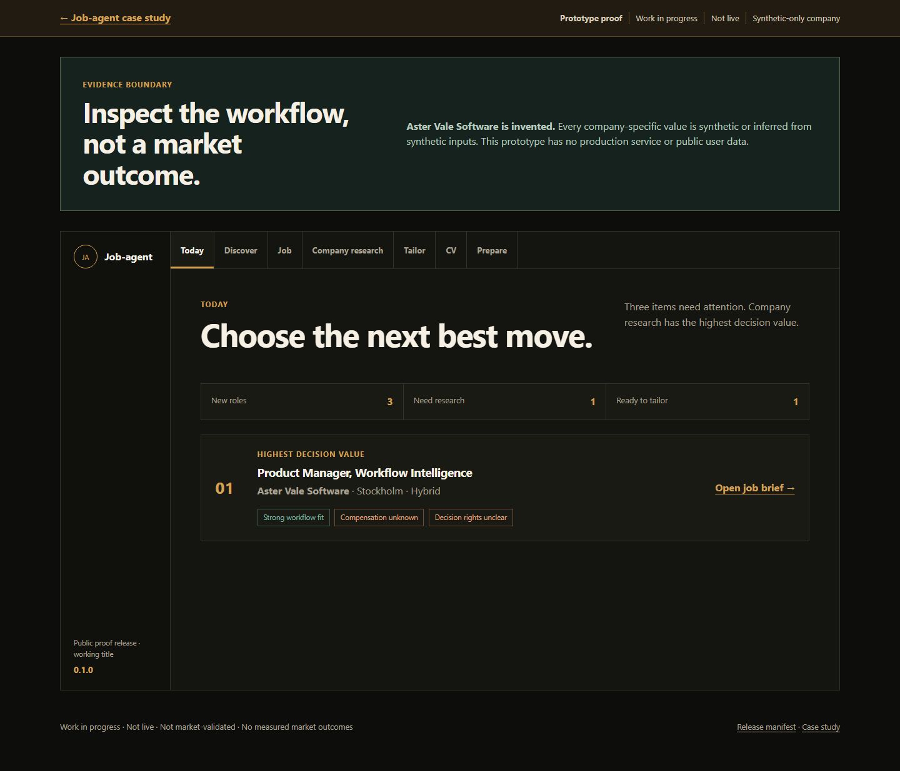
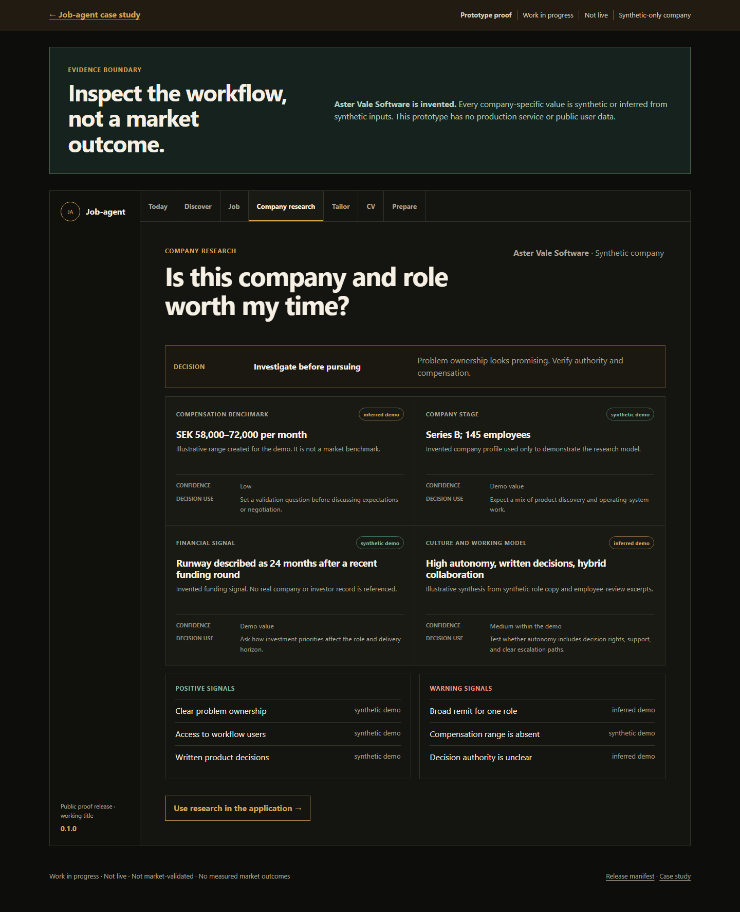
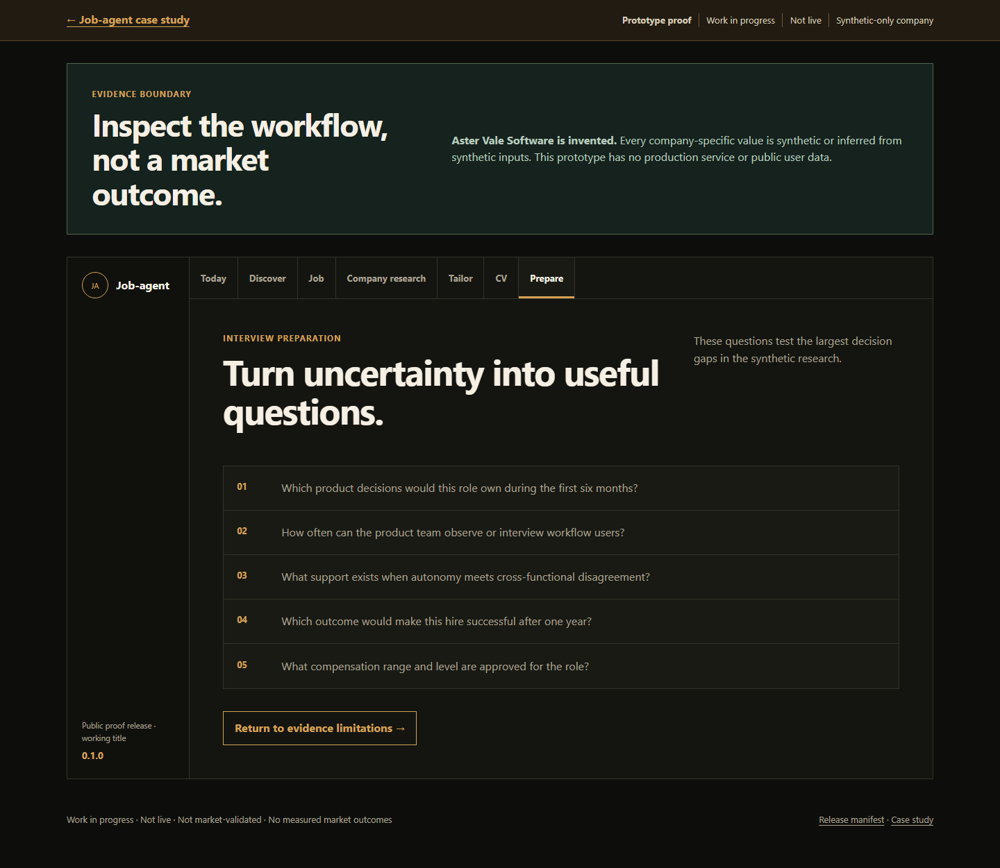
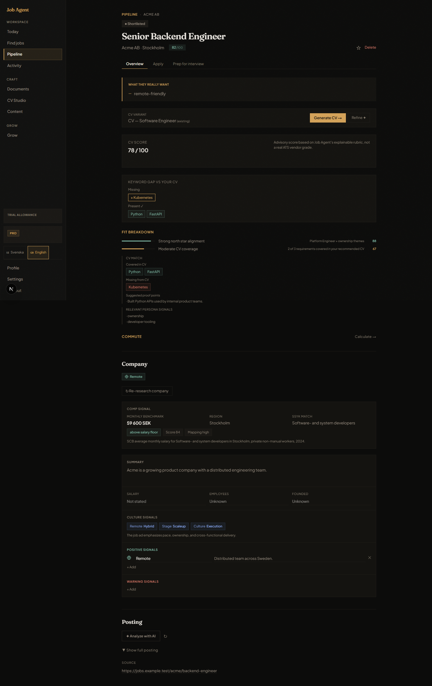
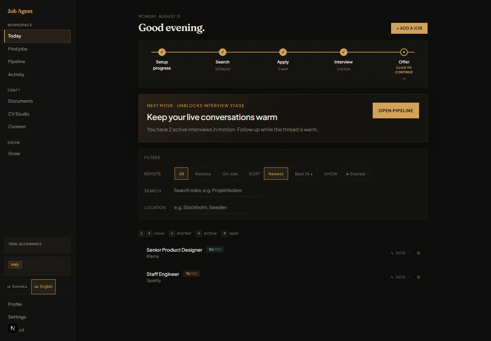
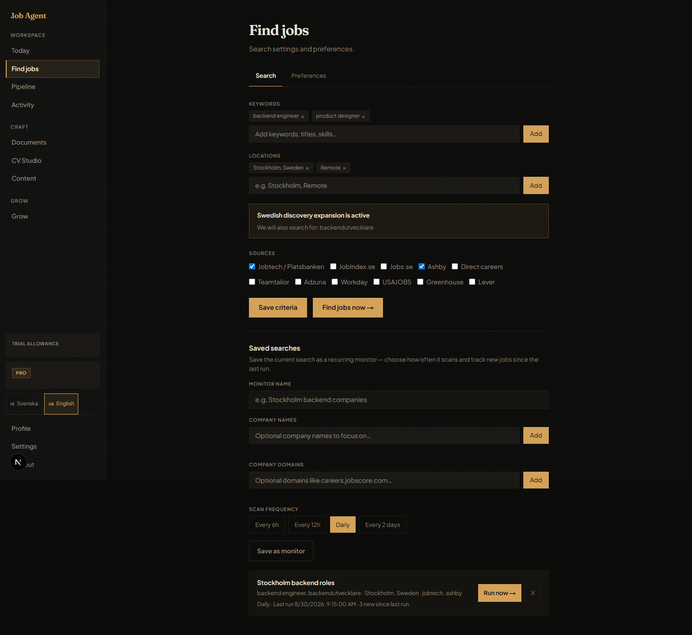

Feature snapshots
Jobs, Discover, and Company screens documented separate capabilities from an earlier product stage.
Baseline · retained for traceabilitySnapshot refresh
Replace the older Jobs / Discover / Company screenshots with one job-detail-led proof page that shows how Job-agent turns uncertainty into a next action.
Evidence boundary: these are recruiter-safe prototype frames. The company is synthetic, and the page should keep its existing “work in progress / not market-validated” language.
Design versions
These labels describe the visible UI/design evolution in the portfolio. They are separate from the source repo's software-release version.
The historical UI is v0.5 and the current UI is v0.8 in this presentation timeline. Option B is the selected presentation format, not a new product version.
Jobs, Discover, and Company screens documented separate capabilities from an earlier product stage.
Baseline · retained for traceabilityFresh captures from the current frontend show Today, Find jobs, and job detail with synthetic data.
Verified capture · 31 Aug 2026The proof-page composition puts the strongest decision-support evidence first, with the wider workflow kept in context.
Selected direction · Option BVersioning rule
Do not bump the product version for every screenshot, copy edit, or proof-page arrangement. Keep those changes in the capture date and presentation label.
Use these portfolio UI labels to show meaningful interface and workflow evolution. Keep the capture date beside them so the evidence remains traceable.
Use the source repo's actual software version for a technical release. Do not turn an Option B proof-page arrangement or a new screenshot into a product release.
Use 1.0 when the core workflow is coherent, usable end to end, and stable enough for external evaluation. It does not claim market validation or commercial success.
v0.5 · earlier UI version
Keep the earlier proof visible so a reviewer can see how the Job-agent interface evolved from a guided workflow to the current product shell.
The earlier version connected discovery, company research, application tailoring, and interview preparation through three explicit decision questions.



Earlier page framing: Work in progress · Not live · Not market-validated · No measured market outcomes.
Option B · selected
Stronger when the goal is to emphasise product judgment and evidence provenance over the breadth of the workflow.
Use the current job-detail view as the single proof-page anchor, then show Today and Find jobs as supporting context for the surrounding workflow.



Suggested implementation
Use the job-detail-led composition as the single proof-page surface and remove the legacy screenshot references from the lead case.
Keep the evidence boundary, synthetic labels, decision questions, and limitations. They make the proof credible.
Do not present the frames as market outcomes, live product usage, or measured user impact.